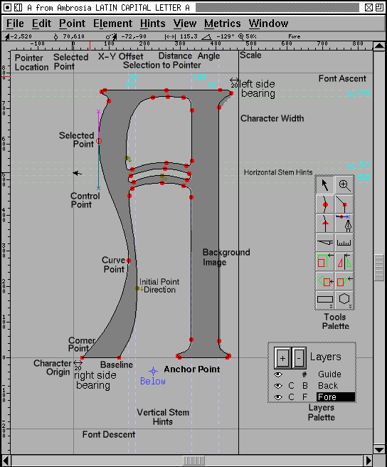

FontForge Documentation¶
FontForge allows you to create and modify postscript, truetype and opentype fonts. You can save fonts in many different outline formats, and generate bitmaps.
Eeyore had three sticks on the ground, and was looking at them. Two of the sticks were touching at one end, but not at the other, and the third stick was laid across them. Piglet thought that perhaps it was a Trap of some kind.
“Oh, Eeyore,” he began again, “just —”“Is that little Piglet?” said Eeyore, still looking hard at his sticks.“Yes, Eeyore, and I—”“Do you know what this is?”“No,” said Piglet.“It’s an A.”“Oh,” said Piglet.“Not O, A,” said Eeyore severely.—The House At Pooh Corner – A. A. Milne, 1928
Font design can be a Trap, but I find it a rather pleasant one. Caveat utor.
Indices and tables¶
Er… What is a font editor?¶
A font editor is a program designed to create and modify fonts.
The most obvious aspect is that it is a drawing program like FreeHand, Inkscape or Illustrator which lets you draw the outlines of your letters. Unlike other drawing programs it expects you to draw many pictures at once (one or more for each letter) and collects them into a database.
It allows you to describe the way these pictures interact with each other (if you put one picture after the other then they should normally be separated by a certain distance – the font’s metrics, or if these two pictures are placed adjacent to one another then they turn into a third – the font’s ligatures, and so on).
Finally a font editor will bundle up all the pictures you have drawn, and all the metadata about how those pictures fit together, and will turn that bundle of stuff into a font that your computer can use to display text.
Introductory concepts: Fonts, Splines, Lines, Points, Paths and the em-unit¶
Most simply a font is a collection of glyphs. But computer fonts must contain more than this, at the least they must also contain information on how to map an input string of bytes into an output display of visual glyphs. This mapping is called an encoding. Many fonts will also contain rules for how adjacent glyphs should be arranged. For instance, in fonts for the latin alphabet, there is often a rule saying that if “f” and “i” are adjacent then a special glyph, a ligature of “f” and “i” should be used instead. Fonts for latin letters generally do not require such rules (but can be enhanced by them), fonts for other scripts like arabic require them.
What’s the difference between a character and a glyph?¶
A character is a concept and a glyph is a reification of that concept. The letter “A” is a character, while are all glyphs that represent an “A”. In latin fonts there is often a single glyph for every character and a single character for every glyph, but not always – in renaissance printing there were two glyphs for a lower-case s, the short and the long s. Whereas a ligature is an example of a glyph that represents two (or more) characters. In arabic most of the letters (characters) have at least four different glyphs, the appropriate glyph being determined by the letters around it. Here are four forms of the arabic character “seen” .
What is an outline font? What is a bitmap font?¶
Each glyph in a font has a shape and there are various ways of describing that shape on a computer. PostScript and truetype fonts generally describe the outline of the shape and then color in the interior of that outline, this coloring process is called rasterizing. On the other hand a bitmap font describes each glyph by drawing a picture of that character on a rectangular grid of pixels. There is a third type, a stroked font, where each stem of the glyph is represented by one line down the center of the stem, and the line is later drawn with a certain width. Most of the time we will not deal with stroked fonts directly (the Expand Stroke command can be used to turn them into outlines), but if you wish to edit stroked fonts, see the section on multi-layered editing.
An outline is composed of a set of contours or paths. In the picture on the above left the letter A is described by three different paths. The main one is on the outside and the two smaller ones are internal. Each of these paths is composed of a series of (Bézier) splines and line segments. FontForge can handle cubic and quadratic splines. PostScript fonts use cubic splines, TrueType fonts use quadratic (SVG fonts can be either).
Each cubic spline is defined by four points, two of which mark the end points of the spline and two more to describe the slope of the spline at those end points. Here are two cubic splines with all their points shown:
The points which describe the slope are called control points. They are represented here (and in fontforge) by little colored x’s. Moving a control point will change the shape of the spline, but it will not alter where the spline begins or ends.
A series of splines and lines are joined together to make a path. There are several possible ways to make these joins as is shown in the example to the right. In each case we have three points in approximately the same relative positions. The three points are joined by splines or lines, but the type of joins alters the appearance of the connections.
In the first case there are no control points and the result is two straight lines, in the second case there is a line and a curved spline which are tangent at their point of intersection, in the third case there are two splines which are again tangent at their point of intersection. The point of intersection in the first case is called a corner point, and the incoming and outgoing splines or lines may be in any orientation with respect to each other. This is represented in fontforge by a square box. In the second case the point of intersection is called a tangent point, it is represented by a triangle. The third case is a curved point and is represented by a circle.

FontForge can also edit quadratic splines (the splines used in truetype fonts), here there is only one control point and it controls the slopes at both end-points. Because of this quadratic splines cannot bend in as many ways as cubic splines (the first spline above left would need at least two quadratic splines to draw), and you will often need more splines to achieve the same curve. You can control whether a font contains cubic or quadratic splines with the Element->Font Info command.
There are many different types of splines in the world. The ones described above are Béziers – these are numerically simple and have a number of nice properties – which is why they are used internally in fonts. However, there are some even nicer splines. It is easy to give Bézier splines the same slope on either side of a point, but a curve will look much nicer if it has the same curvature on either side of a point. Clothoid splines have this property.
Raph Levien has kindly donated to the open source community a library for converting clothoid splines into Béziers.
Clothoid splines are much easier to work with than Béziers – there are no control points, just a sequence of on-curve points, and magically a beautiful curve will appear between them. FontForge can either edit a curve as a set of Béziers or as a set of clothoids.
A path is closed when it comes back and joins its start. All paths in an outline font should be closed. Once a path is closed in may be said to have a direction, essentially this may be thought of as “Was the path created in a clockwise or a counter-clockwise fashion?” (this is actually a little simplistic, if a path intersects itself, as in a figure 8, then the direction cannot be described as either clockwise or counter-clockwise, but most paths do not self-intersect (and paths in a font SHOULD NOT self-intersect) and we will simplify our life by pretending that we can call paths clockwise or counter).
When time comes to draw our outline glyph we want to make dark everything in the interior of the outline. But let’s look at the outline of our A above. We have two paths inside the main outline path, and we want the interior of those two paths to be white rather than dark. How do we make this distinction? We do it by the direction of the paths. Consider any point in the glyph. If we draw an imaginary line from that point out to infinity (in any direction) and count the number of times we cross a path, each time we cross a clockwise path we add one to our count, each time we cross a counter clockwise path we subtract one. If the result of our count is non-zero then we color the point dark, otherwise we leave it white. So to make the A above work we make the outer path be clockwise and the two inner ones be counter-clockwise (Things could be done the other way around, but the convention is that the outer path should be clockwise).
All of these points (both the end points and the control points) are described mathematically. Each point is positioned on a cartesian coordinate system which has its origin on the glyph’s baseline (the line on which letters without descenders rest). Most font formats expect coordinates to be integers between -32768 and 32767, FontForge uses real numbers internally but (usually) rounds to the nearest integer when generating a font file.
Generally it is a good idea to restrict yourself to integral coordinates. TrueType fonts can only contain integral coordinates so if you use a non-integral value FontForge will be forced to round it to an integer and this will alter the shape of the curve. PostScript fonts can contain non-integral values, but the various formats are optimized for integers. So use integers when you can. If you need more precision you can increase the “em-size” of the font.
When displaying a font we use the word “em” to represent the size of the font. If a font is displayed at 12points then 1em will be 12points. If the font is displayed at 18points then an em will be 18points. (traditionally a 12 point font is one where the metal slugs are 12 points tall – or where the baseline to baseline spacing of unleaded text is 12 points, so an em was the size of the metal.).
When designing an outline font, you can no longer think in terms of points – these fonts are scalable and can be any pointsize. You must think in terms of the em and fractions of the em. When you create a font you choose how many internal units (called “em-units”) to use to represent 1 em – this number is called the “em-size”. In most PostScript fonts there are 1000 units to the em, TrueType fonts often have either 1024 or 2048 units to the em (TrueType recommends that you use a power of two). But you can choose any (positive) number you like (well, as long as it is less than 32767), the numbers above are conventions not requirements).
Suppose you have a dash in a PostScript font, and that dash is 500 units long, and the font has 1000 units to the em. Suppose a someone displays that dash at 12 points. Then that dash will be drawn with a length of 500/1000 * 12 = 6 points. On a 72 dot per inch screen where a pixel is almost exactly one point, the dash will be 6 pixels long.
Every glyph has its own coördinate system. The font’s baseline (the line upon which most latin glyphs will rest) is 0 in the vertical direction. The horizontal origin is where the glyph will start being drawn (what is “drawn” will usually be empty space for a short while – as there is usually some space between the origin and the edge of the glyph). This horizontal distance between the origin and the leftmost edge of the glyph is called the left side bearing (it may be negative, positive or zero). All glyphs have a width (sometimes called an advance width), this is the distance from the origin of the current glyph to the origin of the next. The distance between the right edge of the glyph and the width is called the right side bearing.
CJK text (Chinese, Japanese or Korean) can be written either vertically or horizontally, and so CJK fonts usually have a vertical advance width as well as the more common horizontal advance (and concomittant top and bottom side bearings).
A glyph like “g” or “y” extends below the baseline, this is called a descender, while a glyph like “k” or “l” extends above the x-height, this is called an ascender. Most latin (and greek and cyrillic) fonts have certain standard heights: the height of a lower case letter (without an ascender) is called the x-height, the height of a capital letter is called the cap-height, the height of the ascenders is called the ascender height (some, but not all, fonts have the ascenders and capitals at the same approximate height). Often these will not be exactly the same for all glyphs, the letter “O” is usually slightly taller than the letter “I”, but they both are within the range of the cap height for the font.
The font itself has an ascent and descent associated with it. In the old days of metal type nothing could ascend above or descend below these values, nowadays accents and ascenders may reach above the font-wide ascent and descenders below the descent, but the concept is still a convenient one to retain. It is true that in almost all cases the glyphs will not ascend above or descend below the font-wide ascent and descent. The sum of the ascent and descent is the size of the font. The point size of a piece of metal type was determined by this value (essentially the height of the metal block holding the glyph). In a postscript font the local coordinate system is independent of the final size at which the font will be drawn.
TrueType vs. PostScript vs OpenType vs SVG fonts¶
FontForge can produce many font types. What’s the difference?
PostScript is based on a cubic spline technology, while TrueType is based on a quadratic technology. Cubic splines are generally easier to edit (more shapes are possible with them). Any quadratic spline can be converted to a cubic spline with essentially no loss. A cubic spline can be converted to a quadratic with arbitrary precision, but there will be a slight loss of accuracy in most cases.
Within FontForge a font may contain either cubic or quadratic splines. These are converted to the appropriate format when a font is generated.
The other major difference between the two is how they solve the problem of drawing nice images at small pointsizes. PostScript calls this “Hinting”, while TrueType calls it “Instructing” a font.
What’s OpenType?¶
Unfortunately the word “OpenType” has come to have several meanings.
The first meaning describes the glyph (and spline) format of the font. In this sense Open Type is just a postscript font put into a truetype file format – From the outside it looks like a truetype font except that the outline descriptions are postscript Type2 font descriptions rather than TrueType. Technically it is a CFF font inside an sfnt wrapper.
In a second sense of the word OpenType refers to a set of tables containing advanced typographic information. These tables may be added to either fonts specified with quadratic splines (truetype) or fonts with cubic splines.
Finally MS Windows uses an OpenType icon for a font if that font contains a ‘DSIG’ (Digital Signature) table.
To make things even more confusing the OpenType specification includes the old TrueType specification, so technically any TrueType font can be called an OpenType font.
FontForge does not support the DSIG table (if you want one there is a free tool
from MS which will add one). When generating a font, FontForge uses the term
“OpenType (CFF)” to represent a PostScript (CFF) font inside an sfont wrapper.
To include OpenType typography tables you would press the [Options] button
and select the [] OpenType check box.
What’s SVG?¶
SVG (Scalable Vector Graphics) provides a relatively new font format, written in an xml dialect. SVG fonts can be either cubic or quadratic (or can use both, but FontForge is limited and will force a font to be either all cubic or all quadratic). SVG allows for two different types of fonts, one corresponds roughly to PostScript Type1 fonts, and the other, roughly to PostScript Type3 fonts.
What are Type3 fonts?¶
Back in the early days of PostScript, the Type1 format was proprietary, only Adobe could make Type1 fonts, but anyone could make Type3 fonts. Type3 fonts were unhinted, but could include any postscript command and so could produce a wider range of pictures (multi-colored glyphs, stroked glyphs, glyphs based on scaled images, etc.). Most of the time these extensions are unnecessary, and the disadvantage of being unhinted is onerous – but sometimes you want to play.
What are Type1 fonts?¶
These were the standard stand-alone PostScript fonts of the ’80s and ’90s.
What are Type2 fonts?¶
These use a slightly different internal format (a more compact one) to express the same information as type1. This is the format that lives inside a CFF font which lives inside an OpenType font.
What are CFF fonts?¶
This is the font format that is designed to store PostScript Type2 information. It is most commonly found inside an OpenType (PostScript) font.
What is Apple Advanced Typography?¶
This is another way of specifying typographic information (like ligatures, kerning, glyph substitutions). It appeared before OpenType and is only used on Apple computers. It is based on state machines and is a little harder to work with than OpenType.
Hints¶
At small pixel sizes, the process of drawing the interior of an outline font is quite difficult to do well. PostScript and TrueType have different approaches to the problem of providing extra information to the rasterizer about how to draw small fonts.
Rasterization improvements from hinting TrueType. 18pt font rasterized by Windows (scaled by a factor of 2)
PostScript
Adobe incorporated several different ways of providing hints for the rasterizer about how things should be treated. The most obvious of these are the horizontal and vertical stem hints. Each glyph has its own set of hints to tell the rasterizer where to find stems. FontForge can usually figure out a reasonable set of stem hints (a process called autohinting), but some glyphs are too complex for it and it can make bad choices. It also provides a mode for you to override its choices.
Adobe also has a mechanism for handling dished serifs called flex hinting. This means a curve that is only slightly deformed from the horizontal (or vertical) will display as a line at small point sizes and as a curve at larger ones. FontForge will use these when it seems appropriate.
The original version of hints did not allow them to overlap, this meant that most serifs could not be described, Adobe then developed a mechanism called hint substitution which allows for different sets of non-overlapping hints to exist in different parts of the glyph. There are still shapes which cannot be fully hinted, but hint substitution is an improvement. The command will figure out what stems overlap and where to change the current set of hints. The command will also figure where hint changes should occur, and the Hint Mask pane of the Point Info dialog gives the user direct control over this.
Most recently Adobe has provide a means to control the counters, the spaces between stems, in a glyph. The original Type1 description provided support for the horizontal counters in “m” and the vertical counters in “E” but more complex shapes could not be dealt with. Counter Hints (in a type1 font) may only be used with non-latin (non-greek, non-cyrillic) glyph sets, in type2 (OpenType) things are a bit more complicated,. FontForge will generate counter hints when appropriate.
Adobe provides some font-wide hinting mechanisms. The two most obvious are the BlueValues and StemSnap settings in the private dictionary. BlueValues provides a list of vertical zones in which interesting things happen (so in a latin font this might include the ascender height, the cap-height, the x-height, the baseline and the descender height. At small point sizes everything within one of these zones will snap to the same height, while at larger point sizes the heights will be slightly different (for instance an “o” and an “x” usually have slightly different heights, but displaying that at a small point size would be ugly). Similarly the StemSnap variables specify standard stem widths for the font. FontForge will try to guess reasonable values for these. It also allows you to override these guesses and specify your own values. For a more comprehensible description of the private dictionary and what it can do, look at Adobe’s Type1 font specification.
FontForge’s AutoHint command will work better if the BlueValues have been set. So before running AutoHint go to Element-> FontInfo-> Private to set this array. After AutoHinting you should regenerate the StemSnaps (also at ).
True Type
Grid Fit M¶
On the other hand, True Type says that figuring out what pixels to turn on would be a lot simpler if only the points and the splines were in the right place (ie. at pixel boundaries). And so True Type provides a set of instructions that move points around until they are positioned appropriately for a given size.
FontForge’s hinting of True Type (properly called “instructing”) is based on the stem hints also used by PostScript and on diagonal hints. It uses these hints to determine which points to move and where to move them.
When FontForge reads in a TrueType font it will store the instructions used, and when it next generates that font it will use those instructions – provided no significant change has happened to a glyph.
Most of my hinting user interface is designed with PostScript fonts in mind.
References¶
In addition to a set of outlines (splines) glyphs may be built out of references to other glyphs. This is especially handy for the accented glyphs, “à” can be made up of a reference to the “a” glyph and another reference to the “`” glyph. This can result in significant space savings, and in ease of design (if you change the “a” glyph after making a reference to it the “à” glyph will automatically change too, whereas if you just copied the “a” you would have to recopy it.
FontForge has three commands for manipulating references, and one higher level command for building accented glyphs. The Edit->Copy Reference command will put a reference to the current glyph into the clipboard, which a subsequent Edit->Paste command will install as a reference. The Edit->Unlink Reference command will turn a reference in a glyph into it’s component splines. The Element->Get Info command (when applied to a reference) will bring up a dialog showing you what glyph is referred to, and allowing you to bring up an editing window on that glyph. Finally the Element->Build->Accented Glyphs command will figure out what glyphs should be refered to to build this composite glyph, and then will make those references and position them appropriately. So if “à” were selected and you did a Element->Build->Accented Glyphs command, FontForge would make a reference to “a” and another to “`”, and place the accent above the letter, and centered on it.
Some bitmap formats (OK, only one that I’m aware of) support references, so FontForge allows references in bitmap glyphs as well as in outline glyphs.
Sadly life is not always that simple. The references FontForge uses internally cannot always be converted into something equivalent in the output font. Generally this causes no problems (FontForge will simply unlink the reference in the output, which just makes the font a little bigger, but it has implications for instructing TrueType, and, to a lesser extent, hinting PostScript. Most people can ignore this, but if you are interested follow this link).
Most font formats require that a glyph contain either a set of outlines (or bitmap rasters) or a set of references. FontForge allows glyphs with a combination of the two, but, as above, when it comes time to output the results, FontForge will clean up the glyph (generally by unlinking references) so that it can be output in the current format.
Layers¶
A font may have several layers. When FontForge creates a new font it will have 2 real layers (the foreground and background layers) and a sort of half-layer for guidelines which is shared by all glyphs. In normal fonts all glyphs have the same number of layers (This is not true of Type3 fonts, and I’ll talk about them later.)
Both the foreground layer and the background layer have certain predefined meanings: The foreground layer is the default layer for dialogs where there is no clear way to specify a layer. The background layer can contain all sorts of stuff, basically whatever you want it to, but any images in it may be autotraced into the foreground layer.
You may add other layers with the Element->Font Info->Layers pane. Each layer may have a name and a different kind of splines (quadratic or cubic).
One potential use of addtional layers: Many people find it easier to edit using cubic splines but like to produce truetype fonts with quadratic splines. You can use one layer to hold the cubic splines and another to hold the quadratics. There are commands for comparing layers (Element->Compare Layer To Layer) and others for copying one layer to another (and adjusting the splines to fit the new layer: Edit->Copy Layer To Layer).
It seems a shame to have both a valid cubic and a valid quadratic font in a database and only be able to produce a font from one of them, so the font view will allow you to switch between layers (View->Layers->*) and File->Generate Fonts command will allow you to output whatever layer you want into the font. (Note that all layers will share the same hints, instructions, character set, bitmaps, etc. It is only the outlines which differ.) Furthermore, you may choose to store all the layers of a font into an sfnt (TrueType / OpenType font) with the []Layers checkbox of the PfaEdit table of the [Options] dialog.
Type3 Fonts¶
Most people aren’t interested in editing Type3 PostScript fonts (nor the equivalent SVG font), but if you want to, FontForge can. Here each layer represents a different drawing operation, and may specify a different color, stroke, fill, etc. Layers are not font-wide, each glyph has its own set of layers (which are not named). You can create new layers with a popup menu in the layers pane of the outline view.
Guidelines¶
In FontForge guidelines live in their own mini-layer (it isn’t a full layer because all glyphs share the same set of guidelines rather than having an individual layer for each glyph). It can be edited just like any other layer and you may have guidelines of any shape you desire. You may also drag out horizontal and vertical guidelines from the edges of the outline glyph view.
Scripts¶
A script is a collection of letter shapes and rules for putting letters together. For instance the latin script consists of the letters A-Z, written left to right, along with a transformation from upper to lower case, a few ligatures and rules for generating accents. Arabic is a script consisting of its own character set, written right to left, along with transformations for initial, medial, final and isolated forms, many ligatures and rules for placing vowel marks.
Glyph names & Namelists¶
Within fontforge every glyph will have a name. Generally the glyph name will be something that provides information about what the glyph looks like so the name for the glyph representing “9” is “nine”. Adobe has established a standard for what names may be assigned to what glyphs, and when producing a font for general use it is best to stick to that standard (Acrobat uses the glyph names and recognizes the standard ones. If you try and use “neuf” for “nine” Acrobat will not recognize it and surprising things will fail).
Adobe’s standard provides reasonably mnemonic names for most latin and greek glyphs (to English speakers anyway), some rather incomprehensible names for cyrillic and hebrew (afiiXXXXX) and identifies most other glyphs by unicode code point (uniXXXX or uXXXXX where “X” represents a hex digit and XXXX is the unicode code point in hex).
If you are an english speaker and you are working with latin glyphs this is fine and dandy. But if you are French you might wish that “adieresis” were named “atréma” – for that matter even if you are an English speaker you might prefer it to be named “aumlaut”. No matter who you are you might prefer more mnemonic names for the code block you are working on.
FontForge has a concept called a namelist, each of which is simply a mapping from unicode code point to name. Several namelists may be defined, different lists may apply to different fonts and a font may have all its glyphs renamed from one namelist to another.
Namelists can also help navigating in a font. Even if a list does not apply to a given font its names may be used in the goto dialog to find glyphs. So if you’ve loaded a french namelist you can search for “atréma” and FontForge will show you the glyph “adieresis” or “uni00E4” or “aumlaut” or whatever.
A few caveats: Adobe’s glyph name standard expects all glyph names to be in ASCII characters. Syntactically postscript permits a wider range of glyph names, but if you use non-ASCII characters some rasterizers might have problems. Best to keep non-ASCII names within fontforge (and rename glyphs to adobe’s standard names before generating a font).
Lookups, Features, Scripts and Languages¶
OpenType (and Apple Advanced Typography) allow various transformations to be applied to the input glyph stream to produce an output glyph stream. These transformations might include forming ligatures, kerning glyphs closer to each other, attaching vowel marks or diacritics to letters, conditionally replacing one glyph with another depending on the glyphs around it, etc.
The commands for each transformation are stored in what are called lookups. If you were designing a set of lookups to handle latin ligatures, you might have one lookup for ff, fl and ffl – ligatures that happen almost all the time, another for fi and ffi – ligatures which don’t happen in Turkish but do in other languages, and lookups for ct and st – ligatures which rarely happen in English but are more frequent in German (I think).
A Feature is a tagged collection of lookups. The tags are all 4 letter sequences (like ‘liga’) with standardized meanings. The ‘liga’ tag means standard ligatures. The ‘dlig’ tag means discretionary ligatures, and ‘kern’ means kerning. There are many others.
Every script (latin, cyrillic, han ideographs, …) will have its own set of features that are meaningful to it. Sometimes things will be even more complicated, and each language within a script will have it’s own set of features. In the example above we might assign scripts, languages, features and lookups thusly:
Script |
Language |
Feature |
Lookups |
|---|---|---|---|
latn |
default |
liga (standard) |
lookup for ff, fl and ffl |
lookup for fi and ffi |
|||
dlig (discretionary) |
lookup for ct and st |
||
Turkish |
liga |
lookup for ff, fl and ffl 1 |
|
German |
liga |
lookup for ff, fl and ffl |
|
lookup for fi and ffi |
|||
lookup for ct and st 2 |
- 1
Lookups may be shared, so this can be the same lookup as above (Turkish distinguishes between i and dotlessi and fi ligatures hide this distinction.)
- 2
Lookups may even be shared by a different feature type, so for English and Spanish ct might count as a discretionary ligature, one rarely used, while in German it mght be more common and be part of the standard ligature set.
The default language means any language in the script which is not specifically named. So in the above example the default language would be any language except Turkish and German that might use the latin script.
It is also possible to have a default script. The digits 0-9, are used in many writing systems, not just Latin and are considered Common to most scripts. If you have lookups which apply to the digits (conversion to oldstyle digits, or to proportional digits, or to superscripts…) you should attach those lookups to features in all scripts (and languages) that could use them, and to the default script (just in case).
Script |
Language |
Feature |
Lookups |
|---|---|---|---|
latn |
default |
pnum |
proportional number lookup |
onum |
old style number lookup |
||
subs |
subscript lookup |
||
Turkish |
pnum |
proportional number lookup |
|
onum |
old style number lookup |
||
subs |
subscript lookup |
||
German |
pnum |
proportional number lookup |
|
onum |
old style number lookup |
||
subs |
subscript lookup |
||
cyrl |
default |
pnum |
proportional number lookup |
onum |
old style number lookup |
||
subs |
subscript lookup |
||
DFLT |
default |
pnum |
proportional number lookup |
onum |
old style number lookup |
||
subs |
subscript lookup |
There are roughly 15 different types of lookups which contain different information. Different kinds of lookup are needed to specify ligature data, glyph substitution data and kerning data.
Lookups may be specified with the Element->Font Info dialog
Lookup subtables¶
I talk above about lookups as if they were simple things. Unfortunately they aren’t. Each lookup is composed of “Subtables” which actually do the work.
A lookup may contain several subtables. Most contain exactly one. (If a lookup contains no subtables it will do nothing).
I said there were about 15 kinds of lookup, there are even more kinds of subtable. For instance a subtable which specifies glyph to glyph kerning is different from one which specifies glyph class to glyph class kerning.
At first glance the subtable may seem an unnecessary complication, but it turns out to be desirable for one lookup to contain several kinds of sub-table data. For instance, a kerning lookup might include one subtable providing glyph class kerning, and then another subtable providing exceptions to that on a glyph by glyph basis.
How lookups are applied¶
When a word processor deals with text, it will figure out what script is in use in the text. Somehow it will figure out what the language is (maybe it will just assume the “DFLT” language, maybe the user told it the text was in French, maybe the locale is Spanish, …).
In any script/language some features are applied by default, while others may be applied at the user’s discression. So in English the “liga” feature should always be applied, while the “dlig” feature should only be applied if the user asked for it. (Not all programs follow this at the moment, but that’s the theory).
The word processor will build up a list of features that might be active. Then it looks in the font and sees which of those features are available for this script and language. In turn each feature is composed of lookups, and all lookups in all active features will be marked as active.
Lookups will be executed in the order in which they occur in the lookup list (which is also the order shown in the pane, but may be quite different from the order in which the features were listed). And all active lookups will be executed.
This ordering can be important. If you have both a small-caps lookup and a ligature lookup active, and the text is “fi” then the order of the lookups will probably matter. If the small-caps lookup happens first then the “fi” will become “FI” and the ligature feature will not be applied. If the ligature happens first then you will see an “fi” ligature for which there is probably no small-caps glyph. In one case you get small-caps, in another a ligature. Probably, here, you would like the small-caps lookup to happen first.
Lookup subtables make life even more interesting. When a lookup is executed the subtables within that lookup are activated in turn until one succeeds. After that no further subtables will be applied.
So in the kerning example mentioned above, you would want to put the special case glyph to glyph subtable first, and then the glyph class to class subtable second. When a special case combination occurs the first subtable will succeed (and kern the combination) and the class subtable will not be used. For combinations which aren’t special cases, then the first subtable will fail, and the second will be applied.
GPOS and GSUB¶
Up till now I have spoken as there were one list of lookups. That was a simplification. There are two broad classes of lookup, and two lists. There are those involved in manipulating the glyphs themselves (glyph substitution, ligation, decomposition, etc.) and those involved in positioning glyphs relative to others (kerning, mark attachment, etc.).
The GSUB table contains all the glyph substitution lookups and all of them will be processed before any positioning lookups are attempted.
The GPOS table contains all the glyph positioning lookups.
Anchor Points and Classes¶
Anchor points allow fine control of the positioning of two (or several) glyphs. There are several different styles of attachment based on anchors: cursive, mark to base, mark to ligature and mark to mark positioning. The first style is used to join glyphs in flowing scripts (cursive) where the exit from one glyph joins the entry point of the next. In the second style one of the glyphs is the base glyph, and it will be positioned normally, the other glyph which will often be a diacritic or vowel mark will be positioned so that the anchor points in each glyph are coincident. Mark to ligature behaves similarly to mark to base except that there may be more that one attachment point on the ligature depending on which component a given mark is connected to. Finally, mark to mark allows you to position two marks with respect to each other (as you might need to do in vietnamese or hebrew where you may get several marks for one glyph).
That is badly said. Consider the following two glyphs and how they are joined to make the final result:

+

=>
The grave accent has been raised and moved to the right so that its anchor point is positioned where the anchor from “a” was.
FontForge does not compose these glyphs (well, it can, but that’s a completely different area), instead it provides information within the font to a text layout program so that the program can do the composition.
The example above is unlikely to be very useful since most latin fonts contain pre-composed a-grave glyphs, but the same concepts apply to arabic and hebrew where the number of variants is larger and the precomposed glyphs fewer.
That’s roughly how anchor points are used. Now the mechanics.
Each of the different attachment styles mentioned above (cursive, mark to base, mark to ligature and mark to mark) is a different type of GPOS lookup. If you want to do attachment positioning you must first create the appropriate lookup (Element->Font Info->Lookups->GPOS, then a lookup subtable, and then an anchor class within the lookup subtable. An anchor class is specified by providing a name for it (in the above example the class was called “Top”).
Cursive attachments are a little different from the other attachment types. Each glyph has two attachment points, an entry and an exit (instead of just the one shown in the mark to base example above). The text layout program will attach the exit point of one glyph to the entry point of the next.
A glyph may contain several Anchor Points, but only one for each mark to base anchor class (ligatures may have more than one for a class, and ‘curs’ and ‘mkmk’ classes will usually have two). Inside a glyph may create a point with the Point->Add Anchor command. You must specify an anchor class, and whether this point is in a base glyph or in a mark glyph, and a location. So in the example above the anchor point in “a” has class “Top” and is a base glyph, while the anchor point in “grave” also has class “Top” but is a mark glyph. There may be many base glyphs with an anchor point named “Top” and many mark glyphs also with “Top” anchor points. Any base glyph with a “Top” anchor point maybe composed with any mark glyph with a “Top” anchor point. So instead of specifying the exact composed form for all possible combinations we specify far fewer anchor points for the same effect.
But life is not really that simple. Ligatures may need several anchor points of the same class (one above each component for example). When you create your anchor point you may say that it is to be in a ligature, in which case you will also be asked for a ligature index – a number running from 0 to the number of components in the ligature -1. This allows you to position several anchor points with the same class. The text layout program will place the first mark over the first anchor point, the second mark over the second and so on (this is a gross simplification).
Finally you may need to position two marks based on the same anchor point, for example the glyph has a diaeresis and a macron over it. Both of which might normally be positioned with the Top anchor class. Instead we define a special class for positioning one mark with respect to another. When creating the anchor class specify a tag of ‘mkmk’ (mark to mark) and call it something like “TopMark”. When you create a new anchor point for diaeresis you specify that it is a base mark and you position it above the glyph, while the new anchor point in macron should be of type mark and should be positioned at the same place as the “Top” anchor point. Thus when given the sequence of glyphs “a diaeresis macron” the text layout program should position “a” normally, position “diaeresis” so that the its Top anchor point is where “a“‘s is, and position macron so that its TopMark anchor point is where “diaeresis“‘s is.
Anchor points may be selected, dragged, transformed, cut, copied and pasted.
Baselines¶
To a user of the latin alphabet it makes sense for the vertical origin of a
glyph to be the baseline on which most letters rest . This means
that if you change the pointsize of a glyph it will still line up properly
 . This is so obvious we don’t even think about it. But if
you put the vertical origin at the top of the letter then the letters will be
aligned quite differently, and to our eyes, unexpectedly .
. This is so obvious we don’t even think about it. But if
you put the vertical origin at the top of the letter then the letters will be
aligned quite differently, and to our eyes, unexpectedly .
Different scripts have different expectations of how glyphs should be aligned. In latin (cyrillic, greek, arabic, hebrew, etc.) the alignment point, the baseline, is somewhere in the middle of the possible extent of a glyph – that is the script has both ascenders above the baseline and descenders below it.
But not all scripts are like that. In Devanagari the alignment point is near the top of the glyph – indeed most glyphs will draw in the baseline explicitly . If you change the pointsize you want glyphs to line up on this line , and not down at the bottom of the glyph .
In CJK ideographs the baseline is usually drawn at the bottom edge of the square which contains the glyph.
However if you try and typeset these different scripts together with their baselines in the same place you get a mess:
It would be much nicer if it were possible to say that these different scripts have their baselines in different places so that the glyphs can fit together reasonably:
Both Apple Typography and OpenType allow for this. There is a baseline table which says how the baselines for each script (or each glyph) should be aligned with respect to other baselines.
Font View¶
The font view displays all the glyphs in the font (or all that will fit in the window). Every line has two parts, at the top is a label, often small clear letters, underneath that, somewhat larger is a 24 pixel rasterization of the font you have designed. As you edit a glyph in an outline glyph view its small version in the font view will change as you work.
Double-clicking on a glyph will bring up an outline glyph view of that glyph which will allow you to edit it.
Selecting several glyphs will allow you to apply various operations to all of them, or to cut and paste them.
Fonts do not need to be for the latin alphabet alone. Below is a view of one of Wadalab’s public domain Kanji fonts…
Another Wadalab font encapsulated in a CID keyed font
Outline Glyph View¶
The outline view is probably the most complex view in FontForge. This is where you actually edit the splines (Bézier splines) that make up your glyphs.
You may have a background image loaded into the view to help you trace out the shape you are working on (it is displayed in grey). There are various grid lines visible, some created by default (the baseline, the ascent line, the descent line, and a line at x=0), you may add others yourself.
There is a layer showing the glyph’s hints.
In the foreground are the splines and points of the glyph itself, and the width line (you may adjust the glyph’s width by moving this line). If a point is selected then its control points will be displayed.
To the left of the main window (the image below shows them on the right, that was just to keep them from crowding things, you can move them around) are two palettes, one a palette of tools, and the other a palette controlling what layers (foreground, background, grid, hints) are visible and editable.
Bitmap View¶
The bitmap view is similar to the outline view above. It also has a tools and layer palette.
This allows you to edit bitmap versions of the outline glyphs you create above.
In the background is a small rendition of the outline, and in the foreground are the bits of the image. You may make the program calculate which bits should be set by pressing the “Recalculate button”, the results usually need to be tweaked by hand. In the upper left corner is a full sized image of your bitmap glyph.

Metrics View¶
The metrics view allows you to see how the glyphs look together.
You can change the width and left/right bearings of a glyph, either by dragging in the upper part of the window or by entering an appropriate number in the lower.
You can also provide kerning information for any two adjacent glyphs. You can view how various OpenType features affect the glyph stream.
Note that in Hebrew, or Arabic (or any other right to left alphabet) the glyphs will start on the right and run to the left. While in CJK fonts you may want to see things arranged vertically.